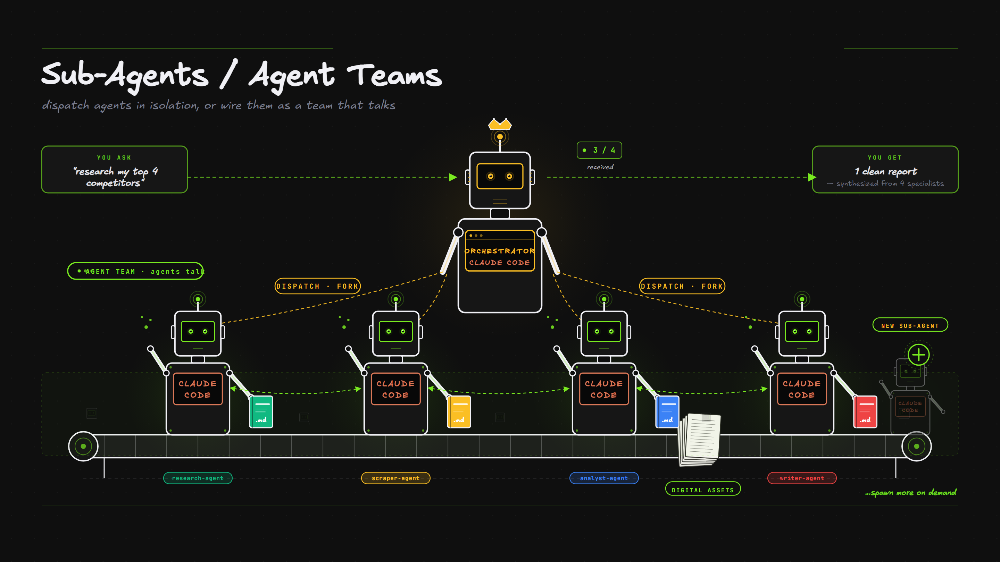
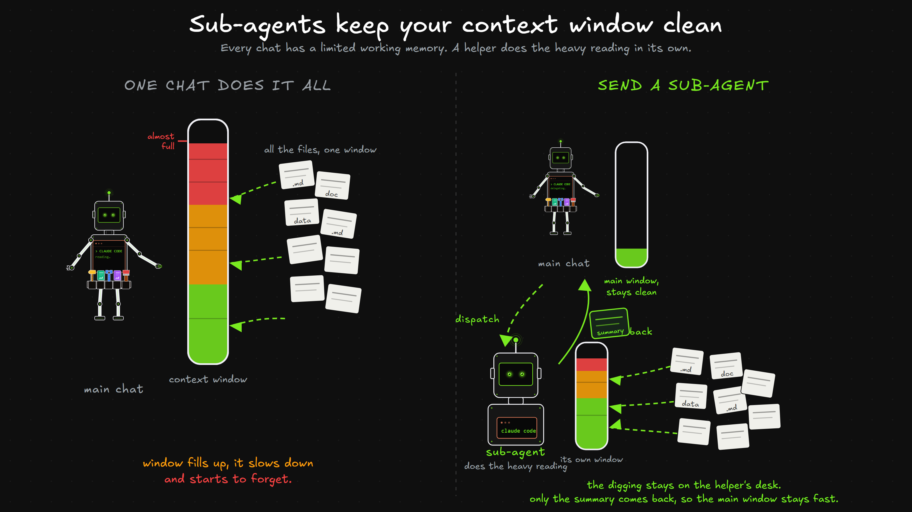
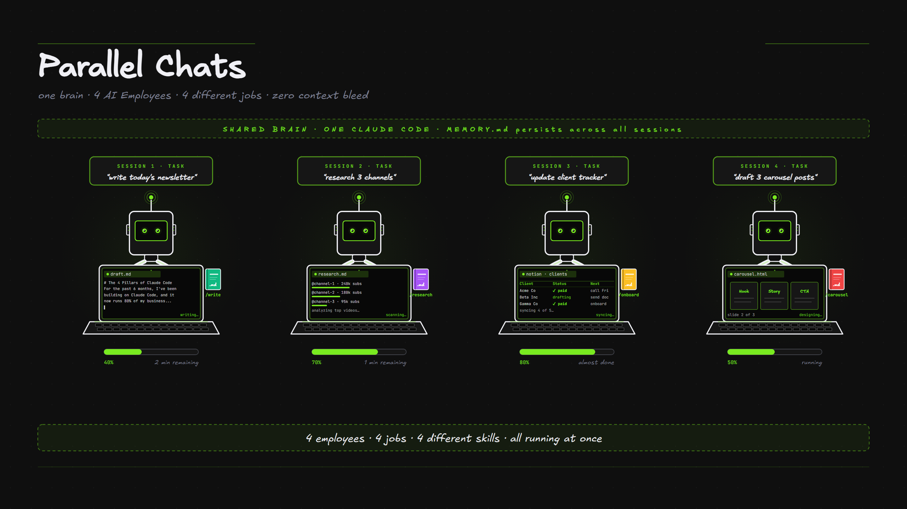
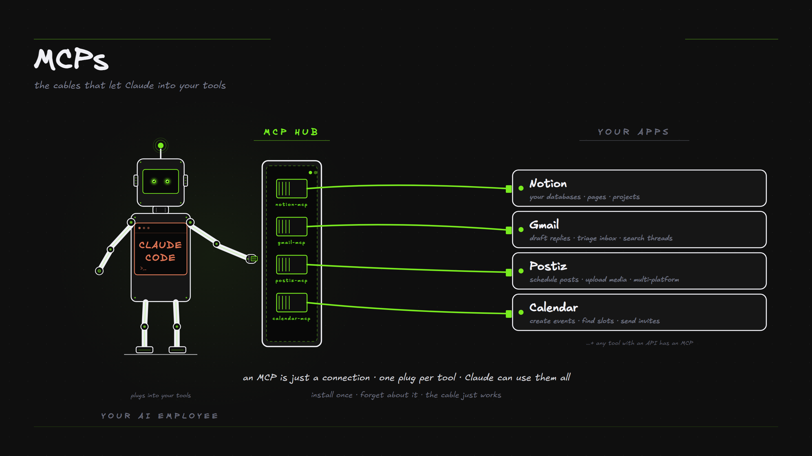

Once one employee can do a job, you extend it. You hand work to helpers that run on their own, and you plug it into the other tools your business already uses. (Making the work run automatically is the next module, hooks.)
What it is. Claude can spin up helper workers that go do a job on their own and report back. Each one gets its OWN context, its own desk. All the files it digs through stay on its desk, and only the summary comes back to you, which keeps your main chat clean and fast.

Why it matters, it protects your context window. Every chat has a limited working memory, its context window (you met it back in the Memory module). Fill that window with twenty files of research and it slows down and starts to forget the early details. A sub-agent fixes this. It gets a fresh window of its own, does all the heavy reading there, and hands back just a short summary. The twenty files never touch your main window, so it stays clean and quick.

When to use one. Reach for a sub-agent when the work is self-contained and noisy, like research, a first pass, a big search, or a batch, where you want the finished answer and not the play-by-play. Keep it in the main chat when you want to go back and forth on it. Three ready-made helpers show up a lot. Explore is fast and read-only, it finds the right files. Plan researches and proposes, it changes nothing. General-purpose handles a full job end to end.
Create an agent that researches my top 4 competitors and reports back what each one offers and how they price it.
Or just say: "create an agent for this"
What it is. Because each helper has its own desk, you can run several at the same time. One writing a newsletter, one researching, one updating a tracker, all going at once. One brain, several jobs, in parallel.

What it is. Connections link Claude to your other tools, Notion, Gmail, your calendar, Postiz, your CRM. The techy name is MCP. Think USB ports for your AI, plug in a tool and it gains that ability.

Why you use it. You don't touch any config. Ask "connect me to Notion", a normal sign-in window opens and you approve, and now you can say "add this to my Notion tasks". Once connected it can work across tools in one go.
Connect me to Notion so you can read and update my tasks.
Or just say: "connect me to [tool]"